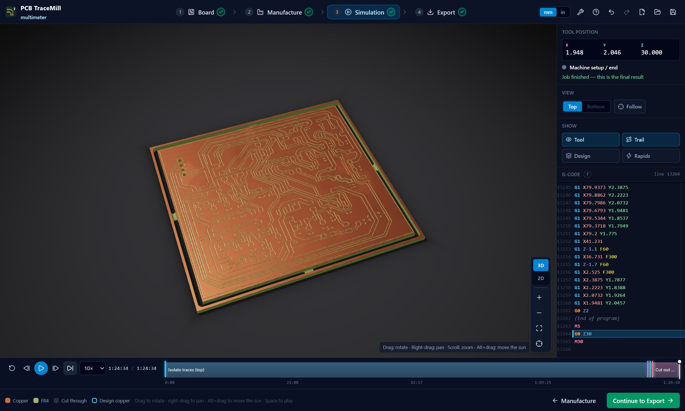
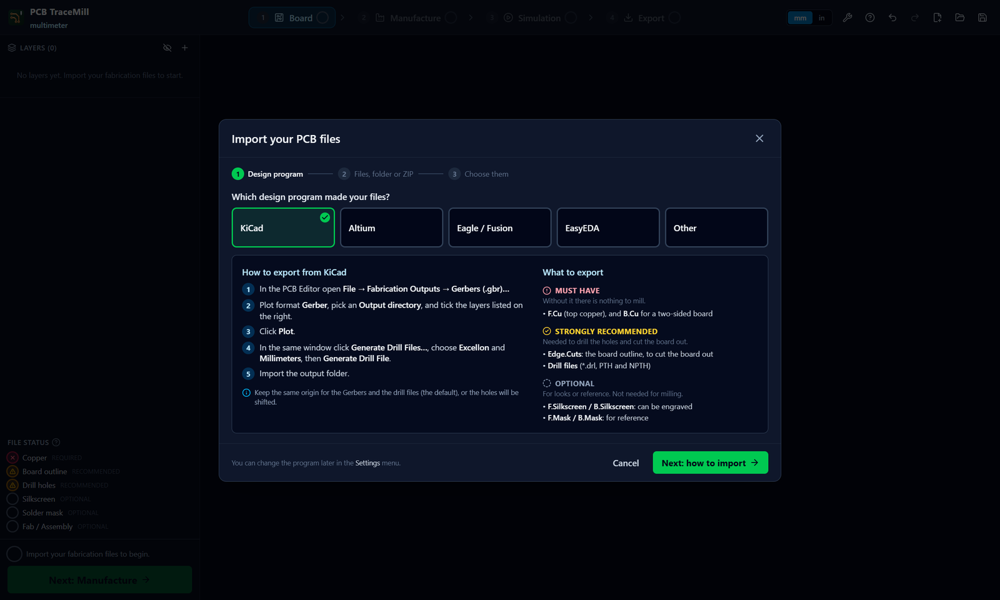
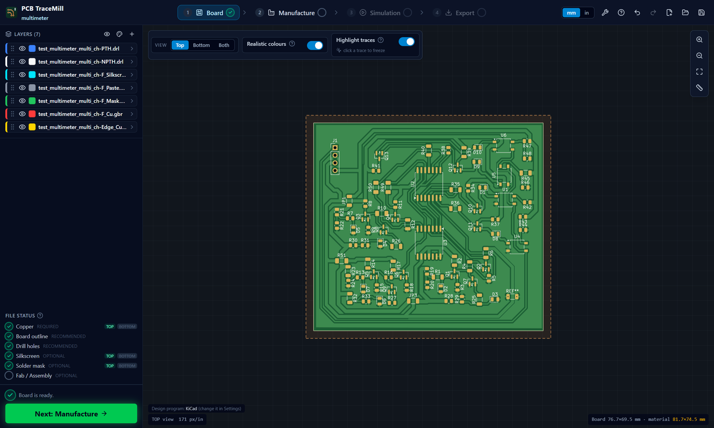
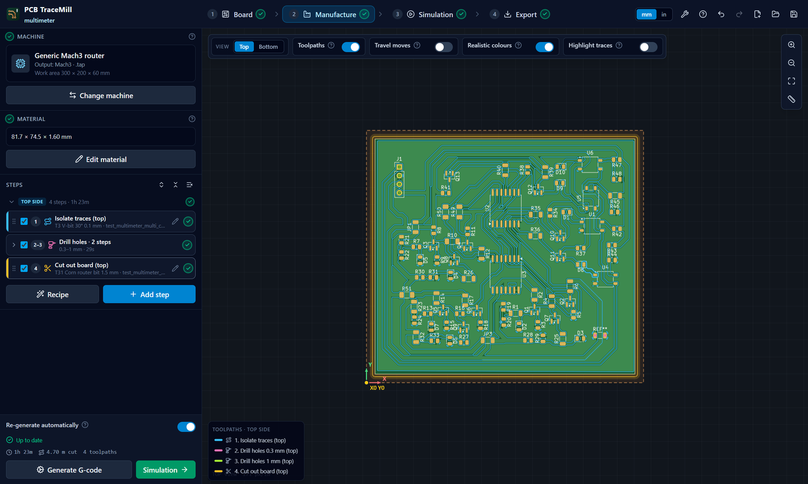
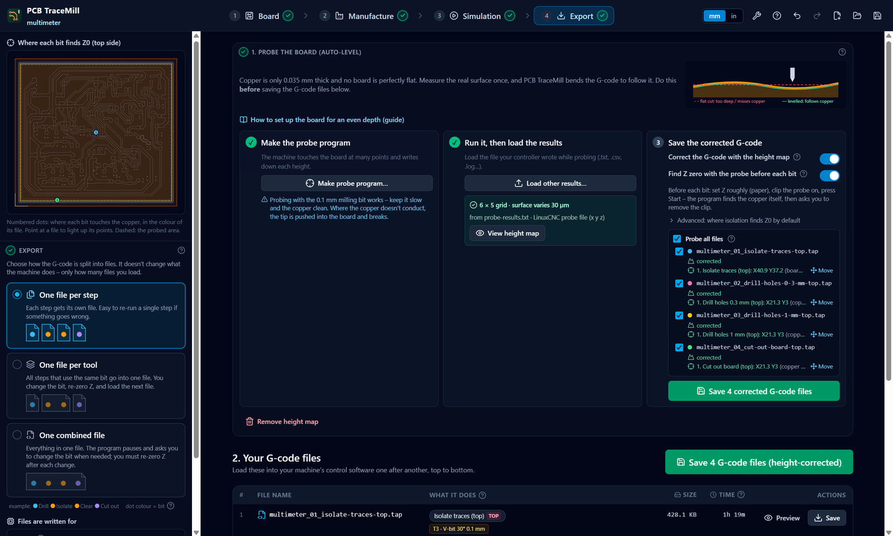
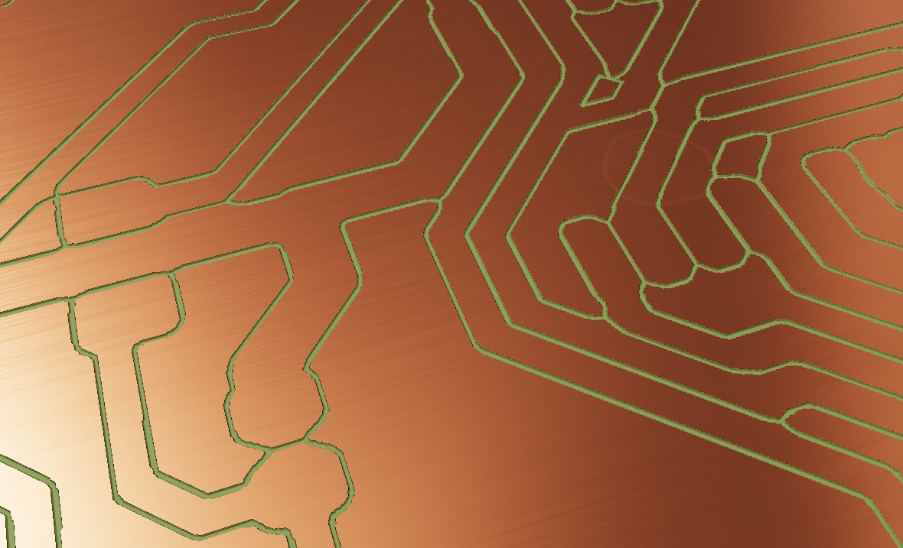
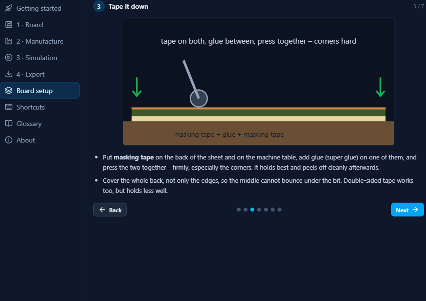

Isolation milling
Grooves around every trace, with smart clearance: one middle groove in narrow gaps, extra passes where there is room. Cut depth chosen from the measured copper gaps.
Free & open source · PCB milling
PCB TraceMill turns the Gerber and drill files from KiCad, EasyEDA, Altium or Eagle into safe, ready-to-run G-code for Mach3, GRBL and LinuxCNC – with a realistic 3D preview and auto-levelling for an even cut depth.
Version 0.1.3 · Also for macOS and Linux · downloads so far

One app for the whole board – and it explains every setting in plain words.
Grooves around every trace, with smart clearance: one middle groove in narrow gaps, extra passes where there is room. Cut depth chosen from the measured copper gaps.
Holes grouped by drill size, big holes milled with an end mill – gently spiralling down.
The board outline is cut out with holding tabs, so the board stays in place until the very end.
Alignment pins and a clear “flip the board” step make both sides line up.
Watch the job being milled in shiny copper before you cut. See every groove, hole and tab – and spot problems for free.
Probe the real board surface and PCB TraceMill bends the G-code to follow it. On Mach3 the heights stay in its variables – no file to copy.
Places a bit cannot reach are shown on the board with one click, so nothing is silently skipped.
A ready tool library (V-bits, end mills, drills, corn bits) plus your own bits, kept between projects.
The app walks you through the job, left to right. New to PCB milling? Read the step-by-step guide.
Pick the program you designed the board in (KiCad, Altium, Eagle / Fusion, EasyEDA or other). PCB TraceMill shows how to export the files from it and which layers you must have, which are recommended and which are optional. Then bring in the files, the folder or the ZIP.

Every layer is recognised and shown in real colours, or each in its own clearly different colour. Show, hide and reorder layers in a compact list, then press Next: Manufacture.

Pick your machine and material, press Recipe, and you get a complete job: isolation, drilling and cut-out, with suitable bits and speeds.

See the finished board in 3D before a single chip flies. Scrub the timeline, follow the tool, move the light.
Probe the board for an even depth, then save the G-code files – one per step or per tool – ready for your controller.

Copper is only 0.035 mm thick. The software is half the story – the other half is how the board sits on the machine. PCB TraceMill comes with an animated board setup guide learned from real test runs:


Short clips of real boards being made with PCB TraceMill.
Free for everyone. No account, no ads.
downloads so far
Windows may show “Windows protected your PC” because the installer is not code-signed yet:
click More info → Run anyway.
macOS: the app is not notarised yet – right-click it and choose Open, or if it says it is damaged,
run xattr -cr "/Applications/PCB TraceMill.app" in Terminal once.
Linux: make the AppImage executable (chmod +x) and run it, or install the
.deb package on Ubuntu / Debian.
All releases
PCB TraceMill is free and open source, and it stays that way. If it saved you time or a trip to the board house and you would like to say thanks, you can buy me a coffee on Ko-fi. It pays for test boards, bits and the time to keep improving the app.
Support on Ko-fiA donation is a voluntary gift. It does not buy a product, a service or support, and the app is the same for everyone.
Payments are handled by Ko-fi and PayPal (PayPal account or any credit / debit card); this website never sees your payment details. More about donations.
Milled a board with PCB TraceMill? Tell others how it went. Found a problem or missing something? Every report helps make it better.
Write your review below. Posting needs a free GitHub account; reading does not. Reviews are public, so please do not post private details.
The reviews are kept in GitHub Discussions and shown by the giscus service, which loads only when you ask. See the privacy policy.
Yes – free and open source under the MIT license. The code is on GitHub.
Mach3 (and Mach4), GRBL senders such as Candle, UGS, bCNC and CNCjs, LinuxCNC, and a generic G-code output for others.
Any that export Gerber RS-274X (X1/X2) and Excellon drill files: KiCad, EasyEDA, Altium, Eagle, Fusion Electronics and more.
No board is perfectly flat, and copper is only 0.035 mm thick. Auto-levelling touches the board at many points and bends the G-code to follow the real surface, so the cut depth stays even. For fine traces it is the difference between a working board and a scrapped one.
No. By default the probe program is plain G-code and Mach3 keeps the heights in its own variables; the corrected files read them directly.
Yes. There are presets for GRBL 3018, Genmitsu, Shapeoko and LongMill machines, and the output works with Candle, UGS, bCNC and CNCjs. Auto-levelling works with GRBL too: run the probe program and load the probe log.
Yes. It does the same job – Gerber to G-code for isolation milling, drilling and cutout – and adds a one-click Recipe, a 3D simulation and built-in auto-levelling, with every setting explained in plain words.
Yes: Windows 10/11, macOS (Apple Silicon and Intel) and Linux (AppImage or .deb).
Best results: a tapered end mill, then a pyramid bit, then a V-bit – all with a 0.1 mm tip and 10–20°. You can probe with the same bit; just keep the speeds PCB TraceMill sets.